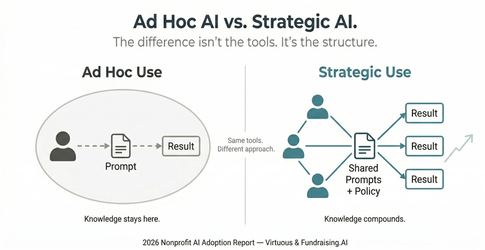

Small nonprofits have a structural advantage in AI adoption that most of them aren't using yet.
A March 2026 study from Virtuous and Fundraising.AI surveyed 346 nonprofits and found 92% are using AI in some capacity. Only 7% report major improvements in what they can accomplish. Organizations under 50 staff are achieving moderate impact at slightly higher rates than large ones, despite having fewer resources. The report's explanation: organizational complexity, not budget, is the bigger barrier. A 6-person team can decide how to use AI on Tuesday and have it running by Thursday.

But size alone doesn't explain the 7%.
The real dividing line is ad hoc versus strategic use. 81% of nonprofits use AI individually, with no documented workflows. Only 4% have repeatable, shared processes. When someone figures out what works, it stays in their head. When they leave, it goes with them. Teams solve the same problems independently, month after month.
Small organizations can close that gap faster than anyone. There's no procurement process, no five-department sign-off, no legacy system to work around. The decision to move from scattered individual use to a shared organizational practice can happen in a single meeting.
What that shift actually requires isn't a strategy deck. It's basic infrastructure: a shared document with five prompts that work, a one-page acceptable use policy, a clear answer to what's encouraged, what needs approval, and what's off limits when donor or client data is involved.
That foundation isn't glamorous. But without it, you never reach the outcomes that actually matter: serving more people with the same team, freeing program staff from the paperwork that keeps them from the work they came to do.
The clock is ticking. Every week of ad hoc AI use is a week of institutional knowledge that doesn't get captured.
What's one AI workflow your team has actually documented and shared — not just one person quietly figured out?